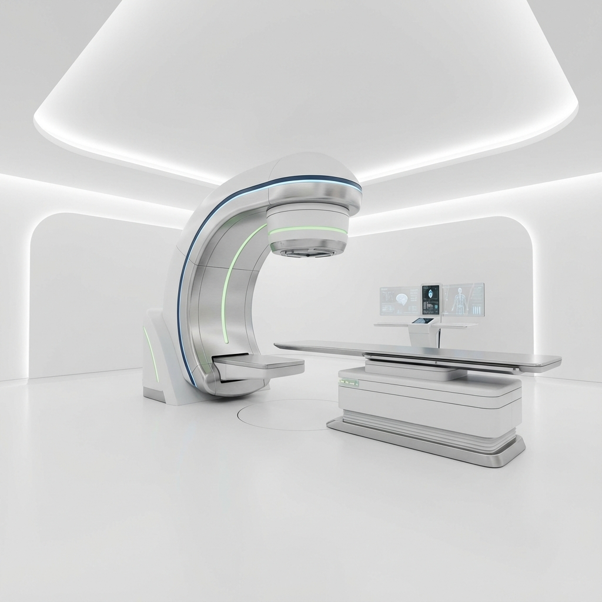

Global Standard Dosimetry Solutions.
DosiCare가 제안합니다.
IBA Dosimetry의 공식 판매처로서 세계 최고 수준의 QA 장비와 통합 솔루션을 국내 의료기관에 공급합니다.

Total Dosimetry Solution Provider
도지케어는 방사선 종양학 분야의 최첨단 장비 공급과 기술 지원을 아우르는 토탈 솔루션 파트너입니다.
도지케어는 IBA Dosimetry의 우수한 QA 시스템을 국내에 보급하며, 단순한 장비 판매를 넘어 설치, 교육, 유지보수, 그리고 자체 개발 소프트웨어인 'Easy Machine'을 통한 워크플로우 최적화까지 의료 현장에 필요한 모든 것을 책임집니다.
도지메트리 환경 지원
분석 및 최적화
복잡한 방사선 분포를 정확하게 분석하여 치료 계획의 신뢰도를 높입니다.
환경 구축 컨설팅
최신 도지메트리 장비 및 시스템 도입을 위한 전문 컨설팅을 제공합니다.
유지 점검 및 교육
시스템의 안정적인 운영을 위한 정기 점검과 기술 교육 프로그램을 운영합니다.
[Easy Machine Interface Preview]